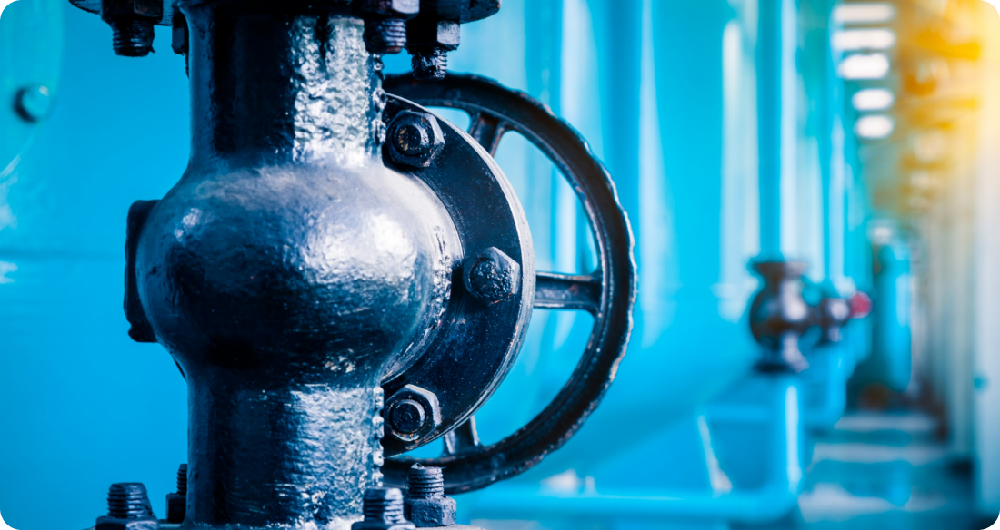
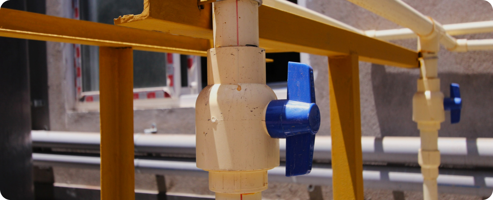

Preventing Backflow: Safeguarding Your Water Supply
Backflow, the unwanted reversal of water flow in a plumbing system, poses a significant risk to the safety and quality of your water supply. When backflow occurs, contaminated water from sources such as irrigation systems, swimming pools, or even sewage systems can flow backward into the potable water supply, potentially causing serious health hazards. In this article, we'll discuss the importance of preventing backflow and measures you can take to safeguard your water supply.
Understanding Backflow
Backflow occurs when there is a sudden change in water pressure within a plumbing system, causing water to flow in the opposite direction. This reversal of flow can happen due to various factors, including water main breaks, pipe bursts, or fluctuations in water demand. Without proper backflow prevention measures in place, contaminated water can enter the clean water supply, posing health risks to consumers.
Types of Backflow
There are two main types of backflow: backpressure backflow and backsiphonage. Backpressure backflow occurs when the pressure in a downstream piping system exceeds the pressure in the supply system, forcing water to flow backward. Backsiphonage, on the other hand, occurs when negative pressure develops in the supply system, pulling water from downstream sources back into the supply lines.
Health Risks of Backflow
Backflow can introduce harmful contaminants such as bacteria, chemicals, and pathogens into the water supply, posing significant health risks to consumers. Contaminated water can cause gastrointestinal illnesses, respiratory infections, and other waterborne diseases, particularly in vulnerable populations such as children, the elderly, and individuals with compromised immune systems.
To prevent backflow and safeguard the water supply, it's essential to implement backflow prevention devices and practices. These may include:
-
Backflow Prevention Devices
Install backflow prevention devices, such as check valves, pressure vacuum breakers (PVBs), or reduced pressure zone (RPZ) assemblies, at critical points in the plumbing system to prevent the reverse flow of water.
-
Regular Maintenance
Schedule regular inspections and maintenance of backflow prevention devices to ensure they are functioning correctly and in compliance with local regulations. This may involve testing, repair, or replacement of devices as needed.
-
Cross-Connection Control
Identify and eliminate or control potential cross-connections between potable and non-potable water sources to minimize the risk of contamination. This may involve installing air gaps, dual check valves, or other approved methods to prevent backflow.
-
Education and Training
Educate homeowners, businesses, and water system operators about the risks of backflow and the importance of proper backflow prevention measures. Provide training on how to identify and address potential backflow hazards in their plumbing systems.
-
Regulatory Compliance
Ensure compliance with local regulations and plumbing codes regarding backflow prevention and cross-connection control. Work with regulatory authorities to implement and enforce backflow prevention requirements to protect public health and safety.
Preventing backflow is essential for safeguarding the integrity and safety of the water supply. By implementing proper backflow prevention measures, including the use of backflow prevention devices, regular maintenance, cross-connection control, and education, we can minimize the risk of contamination and ensure access to clean, safe drinking water for all. It's crucial for homeowners, businesses, and water authorities to work together to address backflow risks and protect the health and well-being of our communities.